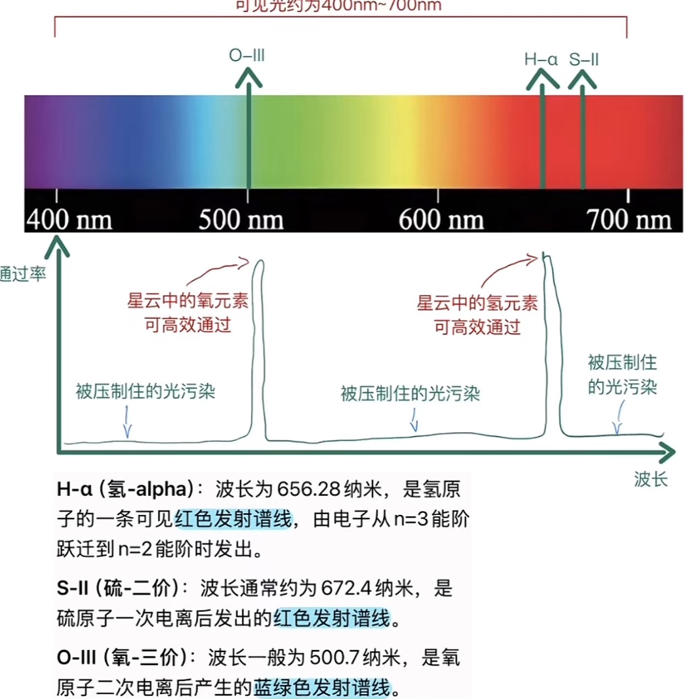
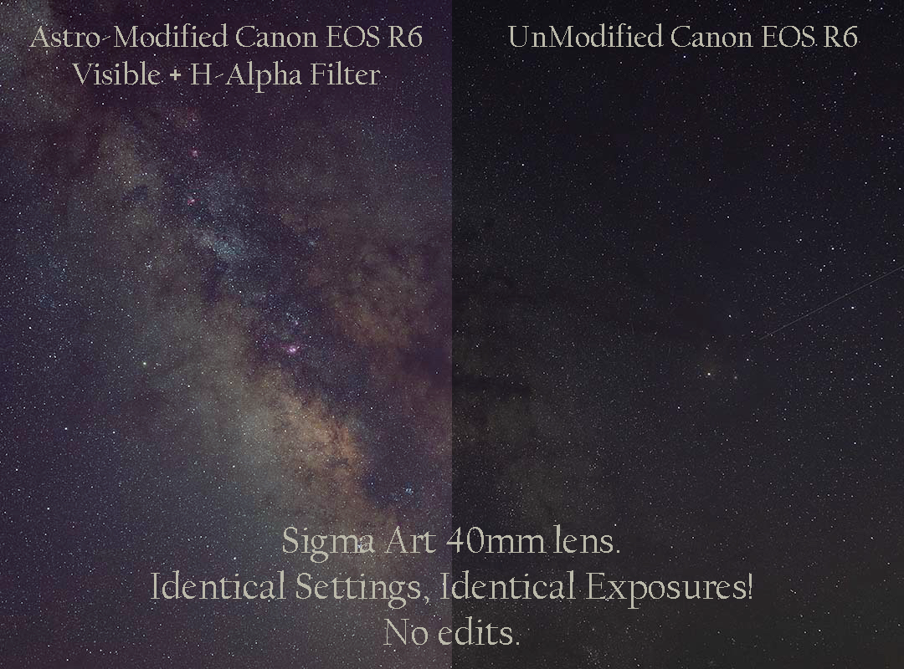

一些碎碎念...
这个 capstone 真的是相当曲折。 我本来是想就学习一些天文知识然后去拍片， 但是我又需要一个网站来承载我的照片和故事， 所以我又需要学习如何去搭建和维护一个网站。 后来我又想拍个视频来记录这一切， 所以我又需要去学习达芬奇。 最后我还想去川西拍摄最纯净的天空， 所以我又去考了个驾照……
天文相机到底哪里比普通相机好了？
有些朋友可能会疑惑，都是可以拍摄照片的相机， 我们为什么不直接使用单反或者微单接在主镜上进行拍摄呢， 而是要使用专门的天文冷冻相机？
这涉及到深空摄影的本质————长曝光。 拍摄的本质就是记录光线在时间和空间上的分布， 一张照片其实就是无数光子的累积。
但是在深空摄影中， 拍摄对象往往在数千甚至数万光年之外， 短时间内能记录到的光非常少。
因此我们需要长时间曝光， 让相机有足够时间接收到光线， 一张不错的星云照片， 总曝光时间往往会达到几个小时。
普通相机的 CMOS 在长时间工作时会产生热噪声， 这些噪点并不是来自星云， 而是传感器本身产生的电子信号。
天文冷冻相机通过半导体制冷模块， 将 CMOS 稳定在远低于环境温度的状态， 从而显著降低热噪声。
仅此而已吗？
不尽然，天文相机还有一个明显优势，那就是对红外光的接受能力。

氢元素与硫元素的主要谱线位于 656nm 与 672nm。 而普通相机 CMOS 前通常有红外截止滤镜， 会削弱甚至完全阻挡这些波段。

第一个夜晚
然后就是拍摄的问题了。 在这次拍摄之前， 我犯了一个非常基础但致命的错误： 我一直只关注光污染， 却忽略了一个重要因素。
无论光污染多低， 云层都会阻挡光线。 你都拍不到，又何谈拍好呢？
无论光污染低到什么地步，云总是能阻挡你拍摄的光线。 你都拍不到，又何谈拍好呢？
以前我一直专注于寻找光污染低的地方， 但是却忽略了云图。
所以当我站在民宿的楼顶时， 望着密不透风的天空， 无奈涌上心头。
连月亮的光辉都被覆盖， 那如何拍摄呢……
查看天文软件，云图显示凌晨两点开始云会变少。 我只能赌这个数据是准确的了。
不过我十二点的时候迷迷糊糊醒了， 拉开窗帘一看， 映入眼帘的是茫茫星点。
我大喜过望，赶紧拿上装备去到顶楼开始拍摄。 这实在是令人惊喜。
可惜天空还是有薄云掠过， 拍摄的 10 张中只有 4 张能用。 但是我已经很满意了。
我现在最大的目标就是练车， 赶紧把驾照考出来， 就能到更好的地方拍摄。
评论